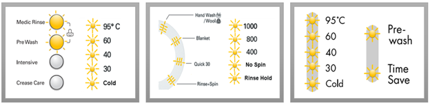

مقاله فنی درباره ماشین لباسشویی
خدمات تعمیر ماشین لباسشویی در محل
در زمان خرابی و عیب در ماشین لباسشویی، زمانی که به فکر تعمیر ماشین لباسشویی می افتیم، بهتر است از نمایندگیهای مجاز که دارای تکنسینهای مجرب و متخصصین فنی هستند استفاده کرد. این نمایندگیهای مجاز بهمنظور جذب مشتریان جدید و حفظ مشتریان موجود خدماتی را به مشتریان ارائه میدهند. از جمله این خدمات تعمیر ماشین لباسشویی در محل و منزل افراد و بدون نیاز به حمل و انتقال دستگاه ماشین لباسشویی به کارگاه تعمیرات لوازم خانگی است
تعمیر ماشین لباسشویی در محل علاوه بر اینکه سرعت درست شدن ماشین لباسشویی را بالا میبرد به دلیل عدم نیاز به جابجایی دستگاه ریسک و خطرات احتمالی که در حین جابجایی دستگاه به وجود می آید را کاهش خواهد داد و حتی مشتریان هزینه اضافه و بیشتری بابت حمل و رفتوبرگشت ماشین لباسشویی به منزل پرداخت نخواهند کرد
همچنین به دلیل عدم جابجایی ماشین لباسشویی، مشتریان اطمینان بالاتری نسبت به تعمیر لوازمخانگی در محل خواهند داشت و از فرایند تعمیر ماشین لباسشویی و احیاناً تعویض قطعات مطلع خواهند شد. نمایندگی مجازی که خدمات تعمیر ماشین لباسشویی در محل را به مشتریان ارائه می دهد این امکان ا به مشتریان خود میدهد تا در خصوص نحوه صحیح کار با دستگاه و عملکرد بهتر و نکاتی در خصوص نگهداری از ماشین لباسشویی از تکنسین فنی و تخصصی که به منزل افراد مراجعه کرده است اطلاعات کسب نمایند
سوالات رایج در زمان خرابی ماشین لباسشویی
نمایندگیهای مجاز تعمیر ماشین لباسشویی از جمله خدماتی که به کاربران ارائه میدهند پاسخگویی تلفنی و هماهنگی جهت تعمیر بهصورت تلفنی با تکنسین مربوطه است. زمانی که با این مراکز تماس گرفته میشود، از مواردی که اپراتور از کاربران ماشین لباسشویی سؤال خواهد کرد شرححال و موارد خرابی ماشین لباسشویی است. در این مرحله اپراتورها باتوجهبه مرسوم بودن برخی از خطاها کاربر را راهنمایی کرده و شاید در این مرحله مشکل برطرف شود ولی درصورتیکه مشکل از مشکلات و عیوب عام جدیدتر باشد اپراتور تلفنی هماهنگی لازم با تکنسین مربوطه را به عملآورده و کاربران با تکنسینها بهصورت تلفنی علائم خرابی دستگاه خود را مطرح و تکنسینها آنها را راهنمایی کرده در صورت نیاز به منزل کاربران مراجعه خواهند کرد. از جمله سوالات رایج در زمان خرابی ماشین لباسشویی که کاربران دستگاه از تکنسینها خواهند پرسید عبارتند از
علت اینکه با چرخاندن دکمه تایمر چراغ روشن نشود و ماشین لباسشویی حرکتی انجام ندهد چیست؟
ماشین لباسشویی به برق است و چراغ تایمر آن روشن میشود ولی ماشین لباسشویی هیچ عملی انجام نمیده، مشکل از کجا است؟
علت اینکه ماشین لباسشویی روشن است اما آب نمی گیرد چیست؟
علت اینکه ماشین لباسشویی آب میگیرد اما عملیات بعدی آن متوقف میشود چیست؟
علت وارد شدن آب به ماشین لباسشویی زمانی که دستگاه خاموش است چیست؟
علت لبریز شدن آب از مخزن زمانی که ماشین لباسشویی روشن است و علت آبگیری دائم و بدون وقفه دستگاه چیست؟
علت نشتی آب از ماشین لباسشویی چیست؟
علت گرم نشدن آب داخل مخزن ماشین لباسشویی چیست؟
دلیل اینکه ماشین لباسشویی آبگیری را کامل انجام میدهد اما موتور شستشوی شروع به کار نمیکند چیست؟
علت از کار افتادن موتور بعد از آبگیری ماشین لباسشویی چیست؟
علت عدم تخلیه آب کثیف از ماشین لباسشویی چیست؟
علت لرزش زیاد ماشین لباسشویی حین شستشوی لباسها چه میباشد؟
علت صدای زیاد و غیرمعمول ماشین لباسشویی حین شستشوی لباسها چه میباشد؟
علت عدم آبکشی لباسها و نبود دور تند در ماشین لباسشویی جهت آبگیری لباسها چیست؟
علت نچرخیدن مخزن شستشوی ماشین لباسشویی بعد از آبگیری چیست؟
ارور PF در ماشین لباسشویی LG
کد خطا یا ارور PF در ماشین لباسشویی ال جی مربوط به ایرادات برق میباشد.
علت به وجود آمدن ارور PF در ماشین لباسشویی ال جی میتواند موارد زیر باشد:
- قطع و وصل شدن جریان برق منزل
- ایراد محافظ یا سه راهی برق
- ایرادات برق ماشین لباسشویی
برای رفع ایراد خطای PF موارد زیر را بررسی کنید:
- هنگامی که ماشین لباسشویی در حین کار باشد و جریان برق منزل قطع شود، پس از اتصال مجدد برق، دستگاه این پیغام را نمایش میدهد. شما میتوانید یکی از کلیدهای روی پنل ماشین لباسشویی را انتخاب کنید تا ارور از صفحه نمایش محو شود و بتوانید دستگاه را راه اندازی کنید.
در بعضی موارد هم ممکن است برق منزل قطع نشده باشد، ولی ماشین لباسشویی پیغام PF بدهد:
- ممکن است ایراد از پریز برق منزل باشد، که میتوانید با یک وسیلهی برقی دیگر پریز برق را تست کنید.
- اگر از محافظ برق یا سه راهی برق استفاده میکنید، بهتر است ماشین لباسشویی را مستقیم به برق اصلی وصل کنید؛ شاید محافظ یا سه راهی دچار مشکل شده باشد.
در صورت عدم رفع ایراد نیاز است ماشین لباسشویی بررسی و در صورت نیاز تعمیر شود.
ارور dE1 در ماشین لباسشویی LG
زمانی که درب دستگاه کامل بسته نشده باشد، ارور یا کد خطای dE1 در ماشین لباسشویی ال جی ظاهر میشود.
علت به وجود آمدن پیغام یا ارور dE1 در ماشین لباسشویی ال جی، میتواند یکی از موارد زیر باشد:
- بسته نشدن درب ماشین لباسشویی
- زبانه درب ،میکروسوئیچ درب ، لولای درب و ...
مطمئن شوید که درب باز نباشد، یک بار درب را
باز کنید و مجدد ببندید و ماشین لباسشویی را
راه اندازی کنید.
در صورت عدم رفع ایراد نیاز به بررسی و تعمیرات لباسشویی
میباشد.
ارور CL در ماشین لباسشویی LG
ارور یا کد خطای CL مربوط به قفل کودک ماشین لباسشویی ال جی میباشد.
به شما توصیه میکنیم با مشاهدهی پیغام یا ارور CL در ماشین لباسشویی موارد زیر را انجام دهید:
- نمایش ارور CL به معنی فعال بودن قابلیت قفل کودک دستگاه میباشد؛ قفل کودک یک سطح محافظتی برای جلوگیری از تغییر وضعیت تنظیمات و یا راه اندازی ماشین لباسشویی توسط کودکان میباشد.
- برای برطرف کردن این ارور یا خطا، میتوانید کلید Child Lock یا کلیدهایی که در کنار آنها علامت قفل قرار دارد را برای 3 تا 5 ثانیه نگه دارید تا قفل کودک غیرفعال شده و همه کلیدها به درستی کار کنند.
در صورت عدم رفع ایراد نیاز به بررسی و تعمیرات لباسشویی می باشد.
ارور dE در ماشین لباسشویی LG
زمانی که درب دستگاه کامل بسته نشده باشد، ارور یا کد خطا dE در ماشین لباسشویی ال جی ظاهر میشود.
علت به وجود آمدن پیغام یا ارور dE در ماشین لباسشویی ال جی، ممکن است یکی از موارد زیر باشد:
- بسته نشدن درب ماشین لباسشویی
- زبانه درب ،میکروسوئیچ درب ، لولای درب و ...
مطمئن شوید که درب باز نباشد. یک بار درب را
باز کنید و مجدد ببندید و ماشین لباسشویی را
راه اندازی کنید.
در صورت عدم رفع ایراد نیاز به بررسی و
تعمیرات لباسشویی وجود دارد.

ارور UE در ماشین لباسشویی LG
کد خطا یا ارور UE در ماشین لباسشویی ال جی مربوط به عدم تعادل لباسها داخل لباسشویی میباشد.
علت به وجود آمدن ارور یا پیغام UE در ماشین لباسشویی ال جی چیست؟
- حجم بار داخل درام ماشین لباسشویی
- مقدار و قوارهی لباسها
- عدم انتخاب برنامهی مناسب
- ایرادات مربوط به موتور و برد و ...

به شما توصیه میکنیم جهت رفع ایراد ارور یا خطای UE در ماشین لباسشویی ال جی موارد زیر را بررسی نمایید:
بیشتر مواقعی که پتو، روفرشی، ملحفه، پرده، توری، حوله بزرگ، عروسک و ... با ماشین شسته شود این حالت ایجاد میشود.
- بررسی نمایید لباسهای داخل درام بیش از حد سنگین نباشد (مقدار لباسها نباید بیشتر از 2/3 ظرفیت دیگ باشد)
- در صورتی که حجم لباس ها کم باشد نیز ممکن است این مشکل پیش آید.
- شاید لباسها به یک سمت درام متمایل شده باشند، آن ها را مرتب کرده و مجدد ماشین لباسشویی را راه اندازی کنید.
- قواره لباسها را بررسی کنید، به این معنی که تکههای بزرگ مانند حوله و ملحفه را با لباسهای قواره کوچک داخل ماشین لباسشویی قرار ندهید.
- چنانچه دور خشک کن بسیار بالا باشد، ممکن است این اتفاق بیافتد. بهتر است دور خشک کن را روی 800 یا 1000 تنظیم نمایید. در صورتی که لباسها سنگین باشند بهتر است از دور 400 استفاده نمایید.
- برای اطمینان از سالم بودن دستگاه توصیه میشود دستگاهتان را یکبار خالی بدون لباس و مواد شوینده روی یک برنامه طولانی مدت مانند Cotton ، Mix ، Synthetic قرار دهید، در صورتی که برنامه به صورت کامل اجرا شد و بدون ارور یا خطا تمام شد، ماشین لباسشویی فاقد ایراد میباشد.
در صورت عدم رفع ایراد نیاز به بررسی و تعمیرات لباسشویی میباشد.
ارور dE2 در ماشین لباسشویی LG
زمانی که درب دستگاه کامل بسته نشده باشد، ارور یا کد خطا dE2 در ماشین لباسشویی ال جی ظاهر میشود.
علت به وجود آمدن پیغام یا ارور dE2 در ماشین لباسشویی ال جی یکی از موارد زیر میتواند باشد:
- بسته نشدن درب
- زبانه درب ،میکروسوئیچ درب ، لولای درب و ...
مطمئن شوید که درب دستگاه باز نباشد. یک بار
درب را باز کنید و مجدد ببندید و ماشین
لباسشویی را راه اندازی نمایید.
در صورت عدم رفع ایراد نیاز به بررسی و تعمیرات لباسشویی میباشد.
ارور OE در ماشین لباسشویی LG
ارور یا کد خطای OE در ماشین لباسشویی ال جی مربوط به عدم تخلیه آب میباشد.
علت به وجود آمدن ارور OE در ماشین لباسشویی میتواند یکی از موارد زیر باشد:
- مشکلات مربوط به فاضلاب منزل
- شلنگ تخلیه ماشین لباسشویی
- فیلتر پمپ تخلیه
- ایرادات مربوط به پمپ تخلیه و سیم کشی دستگاه و ...

به شما توصیه میکنیم با مشاهده ی ارور OE ماشین لباسشویی ال جی برای رفع ایراد موارد زیر را انجام دهید:
- اولین کاری که انجام میدهید بررسی محل تخلیه آب ماشین لباسشویی میباشد؛ یعنی جایی که شلنگ تخلیه دستگاه به فاضلاب منزل متصل شده است امکان دارد گرفتگی داشته و مانع تخلیه آب میشود.
- مسیر شلنگ را بررسی کنید تا مطمئن شوید شلنگ تاخوردگی یا پیچ خوردگی نداشته باشد.
- ارتفاع شلنگ تخلیه ماشین لباسشویی از زمین نیز مهم میباشد. شلنگ تخلیه حتما باید حداقل 60 سانتیمتر و حداکثر یک متر از سطح زمین بالا آمده و بعد به فاضلاب وصل شود.
- فیلتر پمپ تخلیه را باز کرده و تمیز کنید. محل قرارگیری فیلتر جلوی ماشین قسمت پایین است؛ درپوش فیلتر پمپ را جدا کرده و شلنگ جلوی ماشین را آزاد کنید. سپس درپوش را از شلنگ جدا کرده و به این ترتیب، آب باقیمانده درون آن را تخلیه کنید. حالا پیچ فیلتر پمپ را در جهت عقربه های ساعت بچرخانید تا فیلتر باز شود. فیلتر را بشویید و قسمت داخلی پمپ را با برس کاملا تمیز کنید. در نهایت، فیلتر را بسته و درپوش شلنگ را در جای خود قرار دهید.
در لباسشوییهای دوقلوی ال
جی امکان بررسی کردن فیلتر پمپ تخلیه وجود ندارد و فقط
شلنگ تخلیه باید بررسی شود.
در صورت عدم رفع ایراد نیاز به بررسی و تعمیرات لباسشویی میباشد.

ارور IE در ماشین لباسشویی LG
کد خطا یا ارور IE در ماشین لباسشویی ال جی زمانی نمایان میشود که آب وارد دستگاه نشود.
عوامل زیر باعث به وجود آمدن ارور یا خطا IE در ماشین لباسشویی میشود:
- ایرادات مربوط به آب منزل
- ایرادات مربوط به شلنگ ورودی آب ماشین لباسشویی ال جی
- ایراد در شیربرقی و برد و ...


راه حل رفع ایراد کد خطا یا ارور IE در ماشین لباسشویی ال جی چیست؟
- لطفا بررسی کنید شیر آب کاملا باز باشد و همچنین فشار آب منزل نیز مناسب باشد.
- مسیر شلنگ ورودی آب را بررسی کنید؛ امکان دارد پیچ خوردگی یا تاخوردگی داشته باشد و مانع ورود آب به داخل ماشین لباسشویی شود.
- در صورتی که آب منطقه دارای املاح زیادی باشد، امکان دارد فیلتر ورودی آب را مسدود کند، بنابراین هرچند وقت یک بار آن را تمیز کنید.
در صورت عدم رفع ایراد نیاز به بررسی و تعمیرات لباسشویی میباشد.
ارور dE4 در ماشین لباسشویی LG
زمانی که درب دستگاه کامل بسته نشده باشد، ارور یا کد خطا dE4 در ماشین لباسشویی ال جی ظاهر میشود.
علت به وجود آمدن پیغام یا ارور dE4 در ماشین لباسشویی ال جی یکی از موارد زیر میتواند باشد:
- بسته نشدن درب ماشین لباسشویی
- ایراد در حسگر درب ماشین لباسشویی
مطمئن شوید که درب باز نباشد، یک بار درب را
باز کنید و مجدد ببندید و ماشین لباسشویی را راه
اندازی کنید.
در صورت عدم رفع ایراد نیاز به بررسی و تعمیرات لباسشویی میباشد.
ارور dL در ماشین لباسشویی LG
ارور یا کد خطا dL در ماشین لباسشویی ال جی مربوط به قفل درب ماشین میباشد.
- بررسی کنید لباس بین درب ماشین لباسشویی گیر نکرده باشد.
- مطمئن شوید که درب باز نباشد، یک بار درب راباز کنید و مجدد ببندید و ماشین لباسشویی را راه اندازی کنید.
در صورت عدم رفع ایراد نیاز به بررسی و تعمیرات لباسشویی میباشد.
ارور CF در ماشین لباسشویی LG
ارور یا کد خطا CF در ماشین لباسشویی ال جی مربوط به فن برنامه خشک کن صد درصد است.
- هنگامی که برنامه خشک کن صددرصد در حال اجرا باشد و شما ماشین لباسشویی را خاموش نمایید، موتور فن خشک کن برای حافظت از خود به مدت 60 ثانیه کار خواهد کرد. پس از آن لباسشویی پیغام CF را نمایش میدهد.
پیغام CF در ماشین لباسشویی ال جی به معنای فن خنک کننده است.
ارور AE یا EI در ماشین لباسشویی LG
ارور AE در ماشین لباسشویی LG / ارور EI در لباسشویی LG
کد خطا یا ارور AE
/EI در ماشین
لباسشویی ال جی زمانی نمایان م شود که سنسور
نشتی کف ماشین لباسشویی وجود یک نشتی آب را
تشخیص دهد.
چه مواردی باعث به وجود آمدن ارور یا خطا AE یا EI می
شود؟
- نشتی از اتصالات شلنگ ها
- نشتی از اتصالات داخلی ماشین لباسشویی
- میکروسوئیچ ، برد و ...
برای رفع ایراد AE یا EI ماشین لباسشویی ال جی موارد زیر را بررسی نمایید:
- ممکن است محل تخلیه ماشین لباسشویی گرفتگی داشته باشد و مانع تخلیه کامل آب شود و باعث نشتی از شلنگ تخلیه شود.
- در صورتی که کف آشپزخانه را شسته باشید، امکان دارد این ارور را مشاهده نمایید. در این حالت بهتر است چند ساعت ماشین لباسشویی را خاموش کنید تا سطح زیر آن خشک شود.
در صورت عدم رفع ایراد، نیاز به بررسی و تعمیرات لباسشویی می باشد.

ارور E7 در ماشین لباسشویی LG
ارور یا کد خطا E7 در ماشین لباسشویی ال جی به معنی عدم اتصال است و مربوط به ماشین لباسشوییهای Twin Wash می باشد.
- ماشین لباسشویی کوچک (Mini Wash) به تنهایی نمیتواند کار کند و باید زیر یک ماشین لباسشویی مناسب LG درب از جلو (Main Wash) قرار بگیرد.
- یک کلید اتصال رابط بین دو ماشین لباسشویی قرار دارد، در صورتی Mini Wash زیر دستگاه (Main Wash) نصب نشود کلید اتصال کار نخواهد کرد.
در صورت عدم رفع ایراد نیاز به بررسی و تعمیرات لباسشویی می باشد.

ارور LE در ماشین لباسشویی LG
ارور یا کد خطا LE در ماشین لباسشویی ال جی مربوط به ایرادات موتور می باشد.
- علت بروز ارور یا پیغام LE درماشین لباسشویی، ایرادات سیم کشی موتور ، روتور و ... میباشد.
هنگامی که ارور LE روی نمایشگر لباسشویی نمایان میشود، برای رفع عیب نیاز به بررسی از طرف تکنسین میباشد.

ارور PE در ماشین لباسشویی LG
ارور یا کد خطا PE در ماشین لباسشویی ال جی مربوط به ایراد درسنسور سطح آب میباشد.
علت بروز ارور یا پیغام PE در ماشین
لباسشویی ایرادات هیدروستات، اتصالات و سیم
کشی و ... میباشد.
هنگامی که ارور PE روی نمایشگر لباسشویی نمایان
میشود، برای رفع عیب نیاز به بررسی از طرف
تکنسین میباشد.
ارور FE در ماشین لباسشویی LG
کد خطا یا ارور FE در ماشین لباسشویی ال جی زمانی نمایان میشود آب وارد شده داخل دستگاه بیش از حد معمول باشد.
- علت بروز ارور یا پیغام FE در ماشین لباسشویی ال جی ایرادات شیر برقی، هیدرواستات و ... میباشد.
هنگامی که ارور FE روی نمایشگر لباسشویی نمایان میشود، برای رفع عیب نیاز به بررسی از طرف تکنسین است.

ارور Cd در ماشین لباسشویی LG
ارور یا پیغام Cd در ماشین لباسشویی ال جی نشان دهنده خنک سازی بعد از خشک کن صددرصد می باشد . (Cool dry)
بعد از اتمام برنامه خشک کن صددرصد این عملکرد به صورت اتوماتیک اجرا میشود.
وقتی برنامه خشک کن تمام شود، اگر لباسها همان موقع از ماشین لباسشویی خارج نشوند، به دلیل داغ بودن درام ممکن است لباسها آسیب ببیند، به همین دلیل وارد مرحله خنک سازی فعال شده تا از چروک شدن یا آسیب احتمالی لباسها جلوگیری شود.(مدت زمان این عملکرد 4 ساعت میباشد.)
اگر تمایل به اجرای برنامه Cool Dry ندارید، میتوانید کلید START/PAUSE را فشار دهید. عملکرد خنک سازی متوقف شده و میتوانید لباس ها را خارج کنید.
ارور tcL در ماشین لباسشویی LG
پیغام یا ارور tcL در ماشین لباسشویی ال جی مربوط به رسوب زدایی داخل دستگاه میباشد.
- لباسها را از داخل ماشین لباسشویی خارج کنید.
- مواد رسوب زدا را داخل جاپودری بریزید.
- کلید Tub Clean را 3 ثانیه نگه دارید تا پیغام tcL روی نمایشگر ماشین لباسشویی ظاهر شود.
- برای شروع کلید Start را فشار دهید.
- بعد از اتمام کار درب دستگاه را باز گذاشته و لاستیک دور درب و شیشه درب را خشک نمایید.
.

ارور tE در ماشین لباسشویی LG
کد خطا یا ارور tE در ماشین لباسشویی ال جی مربوط به ایرادات سیستم گرمایشی آب می باشد.
- علت بروز ارور یا پیغام tE در ماشین لباسشویی ایرادات ترمیستور، هیتر، سیم کشی و ... میباشد.
هنگامی که ارور tE روی نمایشگر ماشین لباسشویی نمایان میشود، برای رفع عیب نیاز به بررسی از طرف تکنسین میباشد.
ارور CE در ماشین لباسشویی LG
ارور یا کد خطا CE در ماشین لباسشویی ال جی مربوط به ایرادات موتور میباشد.
علت بروز ارور یا پیغام CE در ماشین لباسشویی ایرادات سیم کشی موتور ، روتور و ... میباشد.
هنگامی که ارور CE روی نمایشگر لباسشویی نمایان میشود، برای رفع عیب نیاز به بررسی از طرف تکنسین میباشد.
ارور HE در ماشین لباسشویی LG
ارور یا کد خطا HE در ماشین لباسشویی ال جی مربوط به مدار گرمایشی آب میباشد.
- علت بروز ارور یا پیغام HE در ماشین لباسشویی ایرادات هیتر، سیم کشی هیتر ، ترمیستور و ... میباشد.
هنگامی که ارور HE روی نمایشگر ماشین لباسشویی نمایان میشود، برای رفع ایراد نیاز به بررسی از طرف تکنسین میباشد.
ارور SE در ماشین لباسشویی LG
زمانی که ارور یا کد خطا SE در ماشین لباسشویی ال جی نمایان میشود، دستگاه شروع به کار نمیکند.
علت بروز ارور یا پیغام SE در ماشین
لباسشویی ایرادات موتور ، سنسور و ... ماشین
لباسشویی میباشد.
هنگامی که ارور SE روی نمایشگر
لباسشویی نمایان میشود، برای رفع
عیب نیاز به بررسی از طرف تکنسین میباشد.
ارور EE در ماشین لباسشویی LG
علت بروز ارور یا کد خطا EE در ماشین لباسشویی ال جی برد اصلی میباشد.
هنگامی که ارور EE روی نمایشگر لباسشویی نمایان میشود، برای رفع مشکل نیاز به بررسی از طرف تکنسین میباشد.
ارور dHE در ماشین لباسشویی LG
زمانی که ارور یا کد خطا dHE در ماشین لباسشویی ال جی مربوط به اختلال در برنامه خشک کن صددر صد ماشین لباسشویی میباشد.
علت بروز ارور یا پیغام dHE در ماشین لباسشویی موارد زیر میباشد:
- هیتر خشک کن
- ترموستات خشک کن
- فن خشک کن و ...
هنگامی که ارور dHE روی نمایشگر لباسشویی نمایان میشود، برای رفع عیب نیاز به بررسی از طرف تکنسین میباشد.
ارور dr در ماشین لباسشویی LG
ارور یا کد خطا dr در ماشین لباسشویی ال جی قابلیت تخلیه خودکار آب داخل ماشین لباسشویی میباشد.
- هنگامی که حین شستشو ماشین لباسشویی را برای چند دقیقه روی حالت مکث (pause) قرار دهید، برنامه شستشو لغو شده و آب باقیمانده داخل دیگ به صورت خودکار تخلیه خواهد شد، در این هنگام ارور یا پیغام dr روی نمایشگر لباسشویی ظاهر میشود.
پیغام dr در لباسشویی ال جی یک عملکرد طبیعی میباشد و ایراد محسوب نمیشود.

ارور LOE در ماشین لباسشویی LG
ارور یا کد خطا LOE در ماشین لباسشویی ال جی مربوط به باز بودن درب محفظه مواد شوینده میباشد.
بررسی نمایید درب کشویی
محفظه مواد شوینده بسته باشد.
در صورت عدم رفع ایراد، نیاز به بررسی
و تعمیرات لباسشویی میباشد.
ارور Sud در ماشین لباسشویی LG
برای جلوگیری از نشت مواد شوینده ارور یا کد خطا Sud در ماشین لباسشویی ال جی نمایش داده میشود.
- علت بروز ارور یا پیغام Sud در ماشین لباسشویی ریختن بیش از حد مواد شوینده داخل محفظه مواد شوینده میباشد.
- لطفا جاپودری را تمیز کرده و مجدد لباسشویی را راه اندازی کنید.
در صورت عدم رفع ایراد نیاز به بررسی و تعمیرات لباسشویی میباشد.
ارور nC در ماشین لباسشویی LG
زمانی که ارور یا کد خطا nC در ماشین لباسشویی ال جی، مربوط به اختلال در NFC ماشین لباسشویی میباشد.
هنگامی که ارور nC روی نمایشگر لباسشویی نمایان میشود، برای رفع عیب نیاز به بررسی از طرف تکنسین میباشد.
ارور nU در ماشین لباسشویی LG
ارور nU مربوط به اختلال در NFC ماشین لباسشویی میباشد.
هنگامی که این ارور روی نمایشگر ماشین لباسشویی نمایان میشود، نیاز به مراجعه تکنسین میباشد.
ارور nE در ماشین لباسشویی LG
زمانی که ارور یا کد خطای nE در ماشین لباسشویی ال جیپف مربوط به اختلال در WiFi ماشین لباسشویی میباشد.
علت بروز ارور یا پیغام nE در ماشین
لباسشویی، ایرادات برد WiFi ، سیم کشی و ... میباشد.
هنگامی که ارور nE روی
نمایشگر لباسشویی نمایان میشود، برای رفع
عیب نیاز به بررسی از طرف تکنسین میباشد.
ارور nF در ماشین لباسشویی LG
زمانی که ارور یا کد خطا nF در ماشین لباسشویی ال جی، مربوط به اختلال در WiFi ماشین لباسشویی میباشد.
علت بروز ارور یا پیغام nF در ماشین
لباسشویی ایرادات برد WiFi ، سیم کشی و ... میباشد.
هنگامی که ارور nF روی
نمایشگر لباسشویی نمایان میشود، برای برطرف شدن مشکل نیاز به بررسی از طرف تکنسین میباشد.
ارور FF در ماشین لباسشویی LG
کد خطا یا ارور FF در ماشین لباسشویی ال جی زمانی نمایان میشود که شلنگ ورودی آب، شلنگ تخلیه و یا فیلتر پمپ تخلیه دچار یخ زدگی شده باشد.
به شما توصیه میکنیم با مشاهدهی ارور یا پیغام FF در ماشین لباسشویی موارد زیر را انجام دهید:
- برای رفع یخ زدگی شلنگ ورودی آب ماشین لباسشویی ابتدا شیر آب را ببندید و با استفاده از یک پارچه آب داغ یخ شیر و هر دو ناحیه اتصال شلنگ ورودی آب را باز کنید.
- سپس شلنگ ورودی آب را از ماشین لباسشویی و شیر آب منزل جدا کرده و داخل آب گرم زیر 50 یا 60 درجه غوطه ور کنید.


- برای رفع یخزدگی فیلتر پمپ تخلیه و شلنگ تخلیه مقداری آب گرم با دمای بین50 تا 60 درجه سانتی گراد را داخل دیگ بریزید و 1 الی 2 ساعت منتظر بمانید.
- سپس درپوش و شلنگ فیلتر پمپ تخلیه را باز کنید تا آب اضافی کامل خارج شود. در صورتیکه آب تخلیه نشود، بدین معنی است که یخ کامل آب نشده و باید مدت بیشتری صبر کنید.
در صورت عدم رفع ایراد نیاز به بررسی و تعمیرات لباسشویی میباشد.
ارور LE2 در ماشین لباسشویی LG
ارور یا کد خطا LE2 در ماشین لباسشویی ال جی مربوط به ایرادات موتور میباشد.
علت بروز ارور یا پیغام LE2 در ماشین
لباسشویی ایرادات سیم کشی موتور، روتور و
... میباشد.
هنگامی که ارور LE2 روی نمایشگر
لباسشویی نمایان میشود، برای رفع ایراد
نیاز به بررسی از طرف تکنسین میباشد.
ارور LE1 در ماشین لباسشویی LG
ارور یا کد خطا LE1 در ماشین لباسشویی ال جی مربوط به ایرادات موتور میباشد.
علت بروز ارور یا پیغام LE1 در
ماشین لباسشویی، ایرادات سیم کشی موتور ،
روتور و ... میباشد.
هنگامی که ارور LE1 روی نمایشگر لباسشویی نمایان
میشود، برای رفع عیب نیاز به
بررسی از طرف تکنسین میباشد.
ارور E3 در ماشین لباسشویی LG
ارور یا کد خطا E3 در ماشین لباسشویی ال جی درب از بالا مربوط به عدم تخلیه میباشد.
علت به وجود آمدن ارور E3 در ماشین لباسشویی، می تواند یکی از موارد زیر باشد:
- موارد مربوط به فاضلاب منزل
- شلنگ تخلیه ماشین لباسشویی
- فیلتر پمپ تخلیه
- ایرادات مربوط به پمپ تخلیه و سیم کشی دستگاه و ...

به شما توصیه میکنیم با مشاهدهی ارور E3 ماشین لباسشویی ال جی، برای رفع ایراد موارد زیر را انجام دهید:
- اولین کاری که لازم است انجام دهید بررسی محل تخلیه آب ماشین لباسشویی میباشد، یعنی جایی که شلنگ تخلیه دستگاه به فاضلاب منزل متصل شده است.امکان دارد گرفتگی داشته و مانع تخلیه آب شود.
- سپس مسیر شلنگ را بررسی کنید تا مطمئن شوید شلنگ تاخوردگی با پیچ خوردگی نداشته باشد.
- ارتفاع شلنگ تخلیه ماشین لباسشویی از زمین نیز مهم است. شلنگ تخلیه حتما باید حداقل60 سانتی متر و حداکثر یک متر از سطح زمین بالا آمده و بعد به فاضلاب وصل شود.
در صورت عدم رفع ایراد نیاز به بررسی و تعمیرات لباسشویی میباشد.
علامت یا شکل ترازو در ماشین لباسشویی LG
علامت یا شکل ترازو در ماشین لباسشویی ال جی، به معنی خطا یا ارور UE بوده و مربوط به عدم تعادل لباسها داخل لباسشویی میباشد.
علت به وجود آمدن ارور یا پیغام UE در ماشین لباسشویی ال جی چیست؟
- حجم بار داخل درام ماشین لباسشویی
- مقدار و قواره لباس ها
- عدم انتخاب برنامه مناسب
- ایرادات مربوط به موتور و برد و ...
به شما توصیه میکنیم جهت رفع ایراد ارور یا خطا UE (علامت یا شکل ترازو ) در ماشین لباسشویی ال جی موارد زیر را بررسی نمایید:
بیشتر مواقعی که پتو، روفرشی، ملحفه، پرده، توری، حوله بزرگ، عروسک و ... با ماشین شسته شود این حالت ایجاد میشود.
- بررسی نمایید لباسهای داخل درام بیش از حد سنگین نباشد. (مقدار لباس ها نباید بیشتر از 2/3 ظرفیت دیگ باشد)
- در صورتی که حجم لباسها کم باشد نیز ممکن است این مشکل پیش آید.
- شاید لباسها به یک سمت درام متمایل شده باشند، آن ها را مرتب کرده و مجدد ماشین لباسشویی را راه اندازی کنید.
- قواره لباسها را بررسی کنید، به این معنی که تکههای بزرگ مانند حوله و ملحفه را با لباسهای قواره کوچک داخل ماشین لباسشویی قرار ندهید.
- چنانچه دور خشک کن بسیار بالا باشد، ممکن است این اتفاق بیافتد، بهتر است دور خشک کن را روی 800 یا 1000 تنظیم کنید. در صورتی که لباسها سنگین باشندف بهتر است از دور 400 استفاده کنید.
- برای اطمینان از سالم بودن دستگاه، توصیه میشود دستگاهتان را یکبار خالی بدون لباس و مواد شوینده روی یک برنامه طولانی مدت مانند Cotton ، Mix ، Synthetic قرار دهید. در صورتی که برنامه به صورت کامل اجرا شد و بدون ارور یا خطا تمام شد، ماشین لباسشویی فاقد ایراد میباشد.
در صورت عدم رفع ایراد نیاز به بررسی و تعمیرات لباسشویی است.
علامت یا شکل ضربدر بر روی شلنگ آب ماشین لباسشویی LG
علامت یا شکل ضربدر برروی شیر آب در ماشین لباسشویی ال جی به معنی ارور IE میباشد.
کد خطا یا ارور IE در ماشین
لباسشویی ال جی زمانی نمایان میشود که آب
وارد دستگاه نشود.
عوامل زیر باعث به وجود آمدن ارور یا خطا IE در ماشین
لباسشویی میشود:
- ایرادات مربوط به آب منزل
- ایرادات مربوط به شلنگ ورودی آب ماشین لباسشویی ال جی
- ایراد در شیربرقی و برد و ...

راه حل رفع ایراد کد خطا یا ارور IE در ماشین لباسشویی ال جی چیست؟
- لطفا بررسی کنید شیر آب کاملا باز باشد و همچنین فشار آب منزل نیز مناسب باشد.
- مسیر شلنگ ورودی آب را بررسی کنید؛ امکان دارد پیچ خوردگی یا تاخوردگی داشته باشد و مانع ورود آب به داخل ماشین لباسشویی شود.
- در صورتی که آب منطقه دارای املاح زیادی باشد، امکان دارد فیلتر ورودی آب را مسدود نماید، بنابراین هرچند وقت یک بار آن را تمیز کنید.
در صورت عدم رفع ایراد نیاز به بررسی و تعمیرات لباسشویی میباشد.
علامت یا شکل باز بودن درب در ماشین لباسشویی LG
علامت یا شکل باز بودن درب در ماشین لباسشویی LG به معنی ارور dE میباشد.
زمانی که درب دستگاه کامل بسته نشده باشد،
این شکل یا ارور یا کد خطا dE در ماشین لباسشویی
ال جی ظاهر میشود.
علت به وجود آمدن پیغام یا ارور dE در
ماشین لباسشویی ال جی می تواند یکی از
موارد زیر باشد:
- بسته نشدن درب ماشین لباسشویی
- زبانه درب ،میکروسوئیچ درب، لولای درب و ...
مطمئن شوید که درب باز نباشد، یک بار درب را
باز کنید و مجدد ببندید و ماشین لباسشویی را
راه اندازی نمایید.
در صورت عدم رفع ایراد نیاز به بررسی و
تعمیرات لباسشویی میباشد.
علامت یا شکل ضربدر بر روی شلنگ تخلیه ماشین لباسشویی LG
علامت یا شکل ضربدر بر روی شلنگ تخلیه ماشین لباسشویی ال جی به معنی ارور یا کد خطا OE و مربوط به عدم تخلیه آب میباشد.
علت به وجود آمدن ارور OE در ماشین لباسشویی میتواند یکی از موارد زیر باشد:
- موارد مربوط به فاضلاب منزل
- شلنگ تخلیه ماشین لباسشویی
- فیلتر پمپ تخلیه
- ایرادات مربوط به پمپ تخلیه و سیم کشی دستگاه و ...
به شما توصیه میکنیم با مشاهدهی ارور OE ماشین لباسشویی ال جی برای رفع ایراد موارد زیر را انجام دهید:

- اولین کاری که لازم است انجام دهید بررسی محل تخلیه آب ماشین لباسشویی میباشد، یعنی جایی که شلنگ تخلیه دستگاه به فاضلاب منزل متصل شده است. امکان دارد گرفتگی داشته و مانع تخلیه آب میشود.
- سپس مسیر شلنگ را بررسی کنید تا مطمئن شوید شلنگ تاخوردگی با پیچ خوردگی نداشته باشد.
- ارتفاع شلنگ تخلیه ماشین لباسشویی از زمین نیز مهم است. شلنگ تخلیه حتما باید حداقل 60 سانتیمتر و حداکثر یک متر از سطح زمین بالا آمده و بعد به فاضلاب وصل شود.
- فیلتر پمپ تخلیه را باز کرده و تمیز کنید. محل قرارگیری فیلتر در جلو ماشین قسمت پایین است؛ درپوش فیلتر پمپ را جدا کرده و شلنگ جلوی ماشین را آزاد کنید. سپس درپوش را از شلنگ جدا کرده و به این ترتیب، آب باقیمانده درون آن را تخلیه کنید. شلنگ پیچ فیلتر پمپ را در جهت عقربههای ساعت بچرخانید تا فیلتر باز شود. فیلتر را بشویید و قسمت داخلی پمپ را با برس کاملا تمیز کنید. در نهایت، فیلتر را بسته و درپوش شلنگ را در جای خود قرار دهید.
- در لباسشویی های دوقلوی ال جی، امکان بررسی کردن فیلتر پمپ تخلیه وجود ندارد و فقط شلنگ تخلیه باید بررسی شود.
در صورت عدم رفع ایراد نیاز به بررسی و تعمیرات لباسشویی میباشد.

ارورها و پیغام های ماشین لباسشویی LG (چشمک ها)
در ماشین لباسشویی ال جی
برخی از ارور ها یا خطاها وجود دارد که به صورت چشمک زدن چراغ ها
نمایان میشود.(به دلیل عدم داشتن نمایشگر سون
سگمنتی) و علت بروز خطا از روی روشن شدن چراغ برنامه ها مشخص میشود.
پیغام OE
هنگامی که به هر علتی ماشین لباسشویی ال جی در مرحله تخلیه آب دچار مشکل شود، بنا به مدل یکی از علامتهای زیر را نمایش میدهد.
این علامتها معادل پیغام OE در لباسشوییهای دارای نمایشگر است.

- در مدلهای WF-7501/WF-7706/WM-710NW1/WM-510/WM-107NW1/WM-270NW/WM407W چراغهای Medinc Rinse + Pre Wash روشن و خاموش میشود.
- در مدلهای WM-C70NW/WM-K70NW/WM-K702NW چراغ های Intensive + Pre Wash روشن و خاموش میشود.
- در مدل WD-80240F چراغهای Pre Wash + Time save روشن و خاموش میشود.
- در مدل WD-8980CH چراغهای Rinse Hold + Super + Normal روشن و خاموش میشود.
برای اطلاع از دلایل بروز این خطا در ماشین لباسشویی راهنمای رفع ارور یا پیغام OE را مطالعه نمایید.
پیغام IE
هنگامی که به هر علتی ماشین لباسشویی ال جی در مرحله آبگیری دچار مشکل شود، بنا به مدل یکی از علامت های زیر را نمایش میدهد.
این علامتها معادل پیغام IE در لباسشویی های دارای نمایشگر است.
- در مدلهای WF-7501/WF-7706/WM-710NW1/WM-510/WM-107NW1/WM-270NW/WM407W چراغ های Crease Care + Pre Wash روشن و خاموش میشود.
- در مدل WD-8980CH چراغ های Pre Wash + Main Wash روشن و خاموش میشود.
- در مدلهای WM-C70NW/WM-K70NW/WM-K702NW چراغ های Spin + Temp روشن و خاموش میشود.
- در مدل WD-80240F چراغ های Rinse + Crease Care روشن و خاموش میشود.
برای اطلاع از دلایل بروز این خطا در ماشین لباسشویی راهنمای رفع ارور یا پیغام IE را مطالعه نمایید.
پیغام UE
هنگامی که در ماشین لباسشویی ال جی بین لباسهای داخل ماشین عدم تعادل وجود داشته باشد، بنا به مدل یکی از علامت های زیر را نمایش میدهد.
این علامتها معادل پیغام UE در لباسشوییهای دارای نمایشگر است.
- در مدلهای WF-7501/WF-7706/WM-710NW1/WM-510/WM-107NW1/WM-270NW/WM407W چراغ های Spin روشن و خاموش میشود.
- در مدل WD-8980CH چراغ های Spin روشن و خاموش میشود.
- در مدلهای WM-C70NW/WM-K70NW/WM-K702NW چراغهای Spin روشن و خاموش میشود.
- در مدل WD-80240F چراغهای Spin روشن و خاموش میشود.
برای اطلاع از دلایل بروز این خطا در ماشین لباسشویی راهنمای رفع ارور یا پیغام UE را مطالعه نمایید.
پیغام dE
هنگامی که در درب ماشین لباسشویی ال جی به خوبی بسته نشده باشد، بنا به مدل یکی از علامتهای زیر را نمایش میدهد.
این علامتها معادل پیغام dE در لباسشوییهای دارای نمایشگر است.
- در مدلهای WF-7501/WF-7706/WM-710NW1/WM-510/WM-107NW1/WM-270NW/WM407W چراغهای Medinc Rinse + Pre Wash + Intensive + Crease Care + Temp روشن و خاموش میشود.
- در مدل WD-8980CH چراغهای Temp + Wash + Rinse روشن و خاموش میشود.
- در مدلهای WM-C70NW/WM-K70NW/WM-K702NW چراغهای Intensiv + Spin روشن و خاموش میشود.
- در مدل WD-80240F چراغهای Temp + Rinse + Crease Care + Pre Wash + Time Save روشن و خاموش میشود.
برای اطلاع از دلایل بروز این خطا در ماشین لباسشویی راهنمای رفع ارور یا پیغام dE را مطالعه نمایید.
پیغام HE
هنگامی در ماشین لباسشویی ال جی اختلالی در سیستم گرمایشی آب ماشین رخ دهد، بنا به مدل یکی از علامت های زیر را نمایش میدهد.
این علامتها معادل پیغام HE در لباسشوییهای دارای نمایشگر است.
- در مدلهای WF-7501/WF-7706/WM-710NW1/WM-510/WM-107NW1/WM-270NW/WM407W چراغهای Temp روشن و خاموش میشود.
- در مدل WD-8980CH چراغهای Temp روشن و خاموش میشود.
- در مدلهای WM-C70NW/WM-K70NW/WM-K702NW چراغ های Temp روشن و خاموش میشود.
- در مدل WD-80240F چراغهای Temp روشن و خاموش میشود.
برای اطلاع از دلایل بروز این خطا در ماشین لباسشویی راهنمای رفع ارور یا پیغام HE را مطالعه نمایید.
پیغام FE
هنگامی که در ماشین لباسشویی ال جی آب وارد شده بیش از حد معمول باشد، بنا به مدل یکی از علامتهای زیر را نمایش میدهد.
این علامتها معادل پیغام FE در لباسشویی های دارای نمایشگر است.
- در مدلهای WF-7501/WF-7706/WM-710NW1/WM-510/WM-107NW1/WM-270NW/WM407W چراغهای Medinc Rinse + Pre Wash + Intensive + Crease Care روشن و خاموش میشود.
- در مدلهای WM-C70NW/WM-K70NW/WM-K702NW چراغهای Hand Wash/Wool + Blanket + Quick30 + Rinse+Spin + Temp روشن و خاموش میشود.
- در مدل WD-80240F چراغهای Rinse + Crease Care + Pre Wash + Time Save روشن و خاموش میشود.
برای اطلاع از دلایل بروز این خطا در ماشین لباسشویی راهنمای رفع ارور یا پیغام FE را مطالعه نمایید.
پیغام LE
هنگامی در ماشین لباسشویی ال جی اختلالی در عملکرد موتور لباسشویی رخ دهد، بنا به مدل یکی از علامتهای زیر را نمایش میدهد.
این علامتها معادل پیغام LE در لباسشویی های دارای نمایشگر است.

- در مدلهای WF-7501/WF-7706/WM-710NW1/WM-510/WM-107NW1/WM-270NW/WM407W چراغهای Medinc Rinse + Crease Care روشن و خاموش میشود.
- در مدلهای WM-C70NW/WM-K70NW/WM-K702NW چراغهای Hand Wash/Wool + Blanket + Quick30 + Rinse+Spin + Intwnsive + Pre Wash روشن و خاموش میشود.
برای اطلاع از دلایل بروز این خطا در ماشین لباسشویی راهنمای رفع ارور یا پیغام LE را مطالعه نمایید.
پیغام CE
هنگامی در ماشین لباسشویی ال جی اختلالی در عملکرد موتور لباسشویی رخ دهد، بنا به مدل یکی از علامت های زیر را نمایش میدهد.
این علامتها معادل پیغام CE در لباسشویی های دارای نمایشگر است.

- در مدلهای WF-7501/WF-7706/WM-710NW1/WM-510/WM-107NW1/WM-270NW/WM407W چراغهای Medinc Rinse + Intensive روشن و خاموش میشود.
- در مدلهای WM-C70NW/WM-K70NW/WM-K702NW چراغهای Cotton Quick + Synthetic + Delicate + Baby Care + Spin روشن و خاموش میشود.
برای اطلاع از دلایل بروز این خطا در ماشین لباسشویی راهنمای رفع ارور یا پیغام CE را مطالعه نمایید.
پیغام PE
هنگامی در ماشین لباسشویی ال جی اختلالی در سنسور سطح آب رخ دهد، بنا به مدل یکی از علامت های زیر را نمایش میدهد.
این علامتها معادل پیغام PE در لباسشویی های دارای نمایشگر است.

- در مدلها WF-7501/WF-7706/WM-710NW1/WM-510/WM-107NW1/WM-270NW/WM407W چراغهای Medinc Rinse + Pre Wash + Temp روشن و خاموش میشود.
- در مدلهای WM-C70NW/WM-K70NW/WM-K702NW چراغهای Hand Wash/Wool + Blanket + Quick30 + Rinse+Spin + Spin روشن و خاموش میشود.
- در مدل WD-80240F چراغهای Temp + Pre Wash + Time Save روشن و خاموش میشود.
ارورهای ماشین لباسشویی سامسونگ
ارورهای ماشین لباسشویی
سامسونگ+آموزش رفع ارور و تعمیر ماشین لباسشویی
سامسونگ توسط خود شما
کد خطای 1E, E7, 1C ماشین لباسشویی سامسونگ
دلیل ارور ماشین لباسشویی سامسونگ 1 E, E7, 1C : سنسور سطح آب
بر طرف کردن نقص ارور 1E, E7, 1C ماشین لباسشویی سامسونگ: دستگاه را خاموش کنید و بعد از 30 ثانیه صبر کردن، دوباره دستگاه را روشن کنید و یک برنامه جدید را به دستگاه بدهید.
کد خطای 3E, 3E1, 3E2, 3E3, 3E4, bE, 3C تعمیر ماشین لباسشویی سامسونگ
دلیل ارور 3 E, 3E1, 3E2, 3E3, 3E4, bE, 3C ماشین لباسشویی سامسونگ: موتور
بر طرف کردن نقص ارور 3 E, 3E1, 3E2, 3E3, 3E4, bE, 3C ماشین لباسشویی سامسونگ: دستگاه را خاموش کنید و سپس 30 ثانیه تحمل کنید و دوباره دستگاه را روشن کنید و یک برنامه جدید را به دستگاه بدهید.
کد خطای 4E/E1/4C ماشین لباسشویی سامسونگ
دلیل ارور 4 E/E1/4C ماشین لباسشویی سامسونگ: تامین آب
بر طرف کردن نقص ارور 4E/E1/4C ماشین لباسشویی سامسونگ: مطمئن شوید که شیر آب باز و به درستی نصب شده است، مطمئن شوید که شلنگ آب نگرفته باشد، مطمئن شوید که شیر آب یخ نزده است، همچنین اطمینان پیدا کنید که دستگاه با فشار آب کافی کار می کند، فیلتر ورودی را در آخر شیر آب بررسی کنید همچنین پاک کردن سوراخ فیلتر که ممکن است مسدود شود.
کد خطای 4E1, 4E2, 4Ed, H1, HE, 4C2, HC,CE, E8 ماشین لباسشویی سامسونگ
دلیل ارور 4 E1, 4E2, 4Ed, H1, HE, 4C2, HC,CE, E8 ماشین لباسشویی سامسونگ: دمای آب
بر طرف کردن نقص ارور 4 E1, 4E2, 4Ed, H1, HE, 4C2, HC,CE, E8 ماشین لباسشویی سامسونگ: شلنگ آب خود را به یک
منبع سرد وصل کنید و نه یک منبع گرم، آب سرد اکثراً با یک
شیر آب آبی نشان داده می شود.
کد خطای 5E, E2, 5C ماشین لباسشویی سامسونگ
دلیل ارور 5 E, E2, 5C ماشین لباسشویی سامسونگ: زه کشی
بر طرف کردن نقص ارور 5E, E2, 5C ماشین لباسشویی سامسونگ: فیلتر پمپ زهکشی را تمیز کنید و هرگونه گرفتگی را از بین ببرید همچنین چک کردن شیلنگ تخلیه برای رفع هر گرفتگی، مطمدن شوید که شلنگ تخلیه یخ زده یا نگرفته باشد، مطمئن شوید که شلنگ تخلیه به درستی متصل شده باشد و شیلنگ تخلیه راه به سیستم تخلیه برده است.
کد خطای 8E ماشین لباسشویی سامسونگ
دلیل ارور 8E ماشین لباسشویی سامسونگ: جریان آب
بر طرف کردن نقص ارور 8E ماشین لباسشویی سامسونگ: دستگاه را خاموش کنید و بعد از 30 ثانیه دوباره دستگاه را روشن کنید و یک برنامه جدید به دستگاه بدهید.
کد خطای C8 ماشین لباسشویی سامسونگ
دلیل ارور C8 ماشین لباسشویی سامسونگ: سنسور MEMS
بر طرف کردن نقص ارور C8 ماشین لباسشویی سامسونگ: دستگاه را خاموش کنید و چرخه را دوباره راه اندازی کنید.
کد خطای 9E1, PH1, 9E2, Plo, AE ماشین لباسشویی سامسونگ
دلیل ارور 9E1, PH1, 9E2, Plo, AE ماشین لباسشویی سامسونگ: برق روشن نیست
بر طرف کردن نقص ارور 9 E1, PH1, 9E2, Plo, AE ماشین لباسشویی سامسونگ: لطفا دستگاه را در شبکه خاموش کنید، سپس بعد از 30 ثانیه دوباره آن را روشن کنید، دستگاه خود را به طور مستقیم به برق متصل کنید اگر دستگاه شما باز هم برق نداشت و ممکن است که لازم باشد فیوز را عوض کنید.
کد خطای AC6، AE، 13E، AC ماشین لباسشویی سامسونگ
دلیل ارور AC6، AE، 13E، AC ماشین لباسشویی سامسونگ: اخطار مخابرات
بر طرف کردن نقص ارور AC6، AE، 13E، AC ماشین لباسشویی سامسونگ: بستگی به حالت دستگاه دارد که به طور خودکار به عملیات عادی بازگردد، دستگاه را خاموش کنید و چرخه را دوباره راه اندازی کنید.
کد خطای bE1، 12E، bE2، 14E، bE3،18E ماشین لباسشویی سامسونگ
دلیل ارور bE1، 12E، bE2، 14E، bE3،18E ماشین لباسشویی سامسونگ: دکمه ها
بر طرف کردن نقص ارور bE1، 12E، bE2، 14E، bE3،18E ماشین لباسشویی سامسونگ، بررسی کنید که کدام یک از دکمه ها چسبیده است و دستگاه را از برق جدا نکنید و دکمه ها را با پارچه ملایم تمیز کنید.
کد خطای DDC ماشین لباسشویی سامسونگ
دلیل ارور DDC ماشین لباسشویی سامسونگ: درب
بر طرف کردن نقص ارور DDC ماشین لباسشویی سامسونگ: هنگامی این پیام ظاهر می شود که درب اضافه را بدون فشار دادن Start / Pause باز می کنید.
کد خطای dE, dE1, Ed, dC, DC1, DC ماشین لباسشویی سامسونگ
دلیل ارور dE, dE1, Ed, dC, DC1, DC ماشین لباسشویی سامسونگ: درب
بر طرف کردن نقص ارور dE, dE1, Ed, dC, DC1, DC ماشین لباسشویی سامسونگ: چک کنید که درب کاملاً بسته شده باشد و هیچ چیز لایه درب گیر نکرده باشد، این کد ممکن است اگر دستگاه بیش از حد پر بار باشد، بر روی دستگاه ظاهر شود.
کد خطای dE2 ماشین لباسشویی سامسونگ
دلیل ارور dE2 ماشین لباسشویی سامسونگ: کلید روشن / خاموش
بر طرف کردن نقص ارور dE2 ماشین لباسشویی سامسونگ: دستگاه را از برق جدا کنید، 5 دقیقه صبر کنید و سپس مجدداً امتحان کنید.
کد خطای FE ماشین لباسشویی سامسونگ
دلیل ارور FE ماشین لباسشویی سامسونگ: فن
بر طرف کردن نقص ارور FE ماشین لباسشویی سامسونگ: باید با مرکز خدمات مشتری سامسونگ تماس بگیرید.
کد خطای HE1، E5، 6E ماشین لباسشویی سامسونگ
دلیل ارور HE1، E5، 6E ماشین لباسشویی سامسونگ: گرم کننده
بر طرف کردن نقص ارور HE1، E5، 6E ماشین لباسشویی سامسونگ: باید با مرکز خدمات مشتری سامسونگ تماس بگیرید.
کد خطای HE2 ماشین لباسشویی سامسونگ
دلیل ارور HE2 ماشین لباسشویی سامسونگ: گرم کننده خشک کن
بر طرف کردن نقص ارور HE2 ماشین لباسشویی سامسونگ: بخش خشک کن برای دلایل ایمنی بسته شده است، به دلیل اینکه سنسورهای دما تشخیص دادند که دمای خشک کن بسیار زیاد است و اکثراً به کاهش جریان هوا مربوط می شود، در ماشین لباسشویی باید به اندازه کافی فضا باشد تا آب و مواد شوینده در اطراف آن حرکت کند و به طور کامل به لباس ها نفوذ کند.
درب باید بتواند به راحتی بسته شود، بعضی از لباس ها نباید در خشک کن خشک شوند، زیرا گرمای زیاد هم می تواند سیستم خشک کن را مسدود کند و جریان هوا را محدود کند، قبل از استفاده از ماشین لباسشویی همیشه برچسب پارچه را روی لباس خود چک کنید، بعضی از لباس ها مناسب نیستند که در خشک کن خشک شوند به دلیل اینکه گرمای زیاد می تواند منجر به انبساط مسهل و کمرنگ شود که سیستم خشک را مسدود می کند و جریان هوا را کم می کند.
کد خطای HE3 ماشین لباسشویی سامسونگ
دلیل ارور HE3 ماشین لباسشویی سامسونگ: عملکرد بخار
بر طرف کردن نقص ارور HE3 ماشین لباسشویی سامسونگ: عملکرد بخار معمولاً کار نمی کند و باید توسط تکنسین کنترل و بررسی شود.
کد خطای HE3 ماشین لباسشویی سامسونگ: HOT
دلیل ارور HE3 ماشین لباسشویی سامسونگ: دستگاه خیلی گرم است
بر طرف کردن نقص ارور HE3 ماشین لباسشویی سامسونگ: فن دستگاه به کار کردن ادامه خواهد داد تا زمانی که دستگاه به اندازه کافی برای شستن خنک شود، هنگامی که آن را سرد کرده، درب باز خواهد شد.
کد خطای LE, LE1, E9, 11E, LC, LC1 ماشین لباسشویی سامسونگ
دلیل ارور LE, LE1, E9, 11E, LC, LC1 ماشین لباسشویی سامسونگ: سطح آب پایین شناسایی شده است
بر طرف کردن نقص ارور LE, LE1, E9, 11E, LC, LC1 ماشین لباسشویی سامسونگ: لطفا بررسی کنید که سطح شلنگ تخلیه پایین تر از پایه ماشین لباسشویی نباشد و مطمئن شوید که انتهای شلنگ تخلیه روی کف قرار گرفته باشد و دچار گرفتگی و مسدود نشده باشد، شما همچنین باید نشت آب را چک کنید، اگر نشانه ای از آب وجود نداشته باشد، برق را خاموش و دوباره وصل کنید.
کد خطای t1, t2, tSt ماشین لباسشویی سامسونگ
دلیل ارور t1, t2, tSt ماشین لباسشویی سامسونگ: حالت آزمون
بر طرف کردن نقص ارور t1, t2, tSt ماشین لباسشویی سامسونگ: دستگاه را خاموش کنید و بعد از 30 ثانیه دوباره دستگاه را روشن کنید و به آن یک برنامه جدید بدهید.
کد خطای OE, OF, E3, OC ماشین لباسشویی سامسونگ
دلیل ارور OE, OF, E3, OC ماشین لباسشویی سامسونگ:(سریز) پودر شستشو بیش از حد وجود دارد/ مایع ممکن است اضافه شده است.
بر طرف کردن نقص ارور OE, OF, E3, OC ماشین لباسشویی سامسونگ: خاموش کردن دستگاه و بعد از 30 ثانیه صبر، سپس آن را دوباره روشن کنید، پمپ تخلیه باید ماشین لباسشویی را تخلیه کند.
کد خطای Sud ماشین لباسشویی سامسونگ
دلیل ارور Sud ماشین لباسشویی سامسونگ: کف بیش از اندازه شناسایی شده است
بر طرف کردن نقص ارور Sud ماشین لباسشویی سامسونگ: دستگاه اکثراً این خطا را خودش رفع می کند، با این حال باید چرخه “Eco drum clean” (بعضی از مدل ها) یا یک چرخه پارچه نخی(cotton (90 درجه سانتیگراد را بدون هیچ نوع مواد شوینده یا شستشو روشن کنید، اگر همچنان ادامه داشت، فیلترها و شیلنگ ها را جهت گرفتگی بررسی کنید، سپس یک چرخش برای تخلیه آب باقی مانده در دستگاه اجرا کنید.
کد خطای tE, EC, tE1, tE2, tE3 ماشین لباسشویی سامسونگ
دلیل ارور tE, EC, tE1, tE2, tE3 ماشین لباسشویی سامسونگ: حسگر دما
بر طرف کردن نقص ارور tE, EC, tE1, tE2, tE3 ماشین لباسشویی سامسونگ: دستگاه را خاموش کنید و بعد از 30 ثانیه دستگاه را دوباره روشن کنید و به آن یک برنامه جدد بدهید.
کد خطای UC ماشین لباسشویی سامسونگ
دلیل ارور UC ماشین لباسشویی سامسونگ: نوسان در ولتاژ منبع تغذیه
بر طرف کردن نقص ارور UC ماشین لباسشویی سامسونگ: دستگاه را خاموش کنید و بعد از 30 ثانیه دستگاه را دوباره روشن کنید و به آن یک برنامه جدد بدهید، اگر هنوز نشان نداده شده است بررسی کنید که آیا برق به درستی تامین شده و سیم برق وصل شده است یا خیر.
کد خطای UE, E4, Ub ماشین لباسشویی سامسونگ
دلیل ارور UE, E4, Ub ماشین لباسشویی سامسونگ: ماشین دارای بار نامتعادل است
بر طرف کردن نقص ارور UE, E4, Ub ماشین لباسشویی سامسونگ: بارگیری مجدد با اضافه کردن یا حذف موارد برای اطمینان از اینکه بار ماشین متعادل شده است، مطمئن شوید که ماشین لباسشویی روی سطح صاف و پایدار است.
کدهای ارور ماشین لباسشویی سامسونگ
در ادامه به معرفی ارور ماشین لباسشویی سامسونگ میپردازیم.
| کد ارور | معنی/وضعیت | قطعه مرتبط |
|
nd, 5E |
تخلیه نمیکند |
پمپ تخلیه |
|
LO, dE, dE1 |
خطای باز کردن درب |
مجموعه میکروسوییچ/قفل درب، برد کنترل الکترونیکی |
|
nF, 4E |
مشکل پر کردن آب |
مجموعه شیر برقی ورودی آب |
|
FL, dE, dE1 |
خطای قفل کردن درب |
مجموعه میکروسوییچ/قفل درب |
|
LE |
سطح آب پایین |
دیگ خارجی، لولهها |
|
lE, 1E |
خطای سنسور سطح آب |
سنسور سطح آب |
|
OE |
سریز آب |
مجموعه شیر برقی ورودی آب، سنسور سطح آب |
|
dc, UE |
بار نامتوازن |
اجزاء سیستم تعلیق |
|
E2, bE2 |
گیر کردن کلید |
برد رابط کاربری |
|
ds |
درب هنگام بستن باز است |
مجموعه میکروسوییچ/قفل درب |
|
tE, tE1 |
دمای آب خیلی بالا یا پایین است |
سنسور دما (ترمیستور) |
|
۳E |
نبود سیگنال از سرعتسنج موتور |
موتور، سرعتسنج (سنسور هال) |
|
Hr |
خطای رلهی هیتر |
برد کنترل الکترونیکی |
|
nF1, 4E2 |
لولههای آب گرم و سرد برعکس هستند. |
|
|
۲E |
خطای برد کنترل داخلی |
برد کنترل الکترونیکی |
|
Sud, SUd |
کف زیاد |
ماده شوینده قوی HE |
|
AE |
خطای ارتباط بین برد کنترل الکترونیکی و برد رابط کاربری |
برد کنترل الکترونیکی، برد رابط کاربری |
|
SF |
خطای برد کنترل الکترونیکی |
برد کنترل الکترونیکی |
کدهای ارور لباسشویی سامسونگ
| کد ارور | قسمت معیوب | توضیحات کد ارور |
|
۵E-5E |
مشکل تخلیه |
موتور پمپ از داخل صدمه دیده ولتاژ اشتباه به قطعه میرسد این خطا ممکن است به دلیل یخ زدگی در زمستان رخ دهد لوله آب گرفتگی دادر (احتمال دارد یک جسم خارجی از قبیل لاستیک، اسکناس، سنجاق سر، سکه و .. گیر کرده باشد) ترمینال پمپ وصل نشده است |
|
۸E-3E |
مشکل موتور |
ممکن است عملکرد برد ماشین لباسشویی اشتباه باشد یا مدار کنترل مشکل داشته باشد. چک کنید که کانکتور به طور صحیح متصل شده باشد یا مشکل اتصال نداشته باشد. حرکت موتور بیثبات است چون سنسور آن کار نمیکند. |
|
۹E1-9E2 PIO-PH1-UC |
مشکل برق ورودی |
وضعیت ولتاژ برق مصرفکننده را چک کنید. ولتاژ را حین کار را چک کنید، حین عملیات خشک کردن یک ولتمتر به ترمینال ورودی وصل کنید و عملکرد ماشین لباسشویی را دقیقا بررسی کنید. این خطا ممکن است در حالت افت یا اضافه بار رخ دهد. چک کنید که دو شاخه متصل شده باشد. در حالتی که سیم یک متر است یک افت ولتاژ موقتی ۱۰ ولتی ممکن است رخ دهد. گاهی خطا مربوط به PBA MAIN است. |
|
AE-13E |
مشکل ارتباطی |
سیگنالها بین دو برد MAIN و SUB به دلیل مشکل ارتباطی دریافت نمیشوند. ارتباط کانکتور بین MAIN و SUB را با دقت چک کنید، به دنبال اتصالات اشتباه یا قطعشده باشید. برد PBA SUB را از پنل جدا کرده و به دنبال لحیم سردی باشید. |
|
۱۲EBE1 |
مشکل سوئیچ (رله اصلی) |
دکمه استارت به صورت متناوب نگه داشته شده است. (برای ۱۲ ثانیه) پیچهایی که برد را نگه داشتهاند بیش از حد سفت شدهاند و خطا رخ میدهد. به دلیل تغییر شکل پنل، سوئیچ فشرده شده است. |
|
۱۲E-BE2 |
دکمهای غیر از استارت به صورت متناوب نگه داشته شده است (بیش از ۳۰ ثانیه) یک از پیچهایی که برد را نگه داشته بیش از حد سفت شده است. |
|
|
۱۸E-BE3 |
رله اصلی برد، اتصال کوتاه شده است. ترمینال رله اصلی درست وصل نشده است (مثلا ترمینال خم شده و اتصال برقرار نمیشود) |
|
|
CE |
مشکل دمای آب |
هنگامی که دمای آب لباسشویی بالاتر از ۵۵ درجه است و عمل تخلیه هم صورت نمیگیرد (اگر آب داغ با سطح پوست تماس پیدا کند ممکن است باعث سوختگی شود.) در حالتی که دمای آب برای یک دورهی خاص به ۵۵ درجه میرسد، در این حالت آب تخلیه خواهد شد. به دلیل مشکل سنسور حرارتی هم میتواند باشد. |
|
DE DE1 DE2 |
مشکل درب |
وقتی که درب با فشار کشیده میشود، به دلیل دفرمه شدن زبانه درب تماس سویچ برقرار نشده و خطا میدهد. سوکت سوئیچ قفل، به درستی وصل نشده است، سوکت سوئیچ قفل، شکسته شده است. ممکن است این خطا به دلیل جریان نشتی متناوب از یک سیم رخ دهد. ممکن است مشکل از برد دستگاه باشد. سوئیچ استارت به طور متناوب خاموش و روشن میشود و گرمای بسیار زیادی تولیده شده است. |
|
FE |
مشکل فن |
سوکت روی فن لباسشویی از جای خود درآمده باشد. فن مشکل دارد، یکی از سیمهای موتور فن جدا شده است. پرههای فن درگیر هستند مثلا به روکش گیر کردهاند، بنابراین فن نمیتواند کار کند. سیستم ایرواش مشکی دارد که در این حالت آن را عوض کنید. |
|
HE-E5-HE1-E1-EC |
مشکل هیتر |
هیتر شستشو اتصال کوتاه شده است و یا قطعی پیدا نموده است. هیتر پیغامی خطا می دهد (خطای اتصال، خطای سنسور) سنسور سطح آب بدون آب عمل میکند، ممکن است آب داخل لوله هیدروستات یخ زده باشد. در این صورت سنسور دما برای جلوگیری از اضافه شدن دما عمل میکند چون هیتر دمایی بین ۱۰۰ تا ۱۵۰ درجه دارد. |
|
HE3 |
مشکل هیتر |
هنگامی که عملکرد بخار به صورت طبیعی انجام نمیپذیرد. (در مورد دستگاههایی که سیستم بخار دارند.) |
|
LE-11E-LE1-E9 |
مشکل نشتی آب |
محل اتصال هیتر را چک کنید، لوله هوا از جا در آمده و حین سیکل چرخش نشتی آب رخ میدهد دیگه عقب در قسمتی که پیچ سفت میشود شکسته است. به دلیل مقدار زیاد ماده شوینده در قسمت جلو نشتی آب همراه با کف رخ میدهد. لوله اتصال به محفظه ماده شوینده به درستی وصل نشده است و نشتی رخ میدهد. کیس فیلتر پمپ تخلیه درست وصل نشده است. نشتی آب در لوله تخلیه رخ میدهد. سنسور نشتی مشکل دارد. |
|
E3-OF-OE |
مشکل اضافه بودن آب |
به طور متناوب آب وارد میشود زیرا حسگر سطح آب (هیدروستات) کار نمیکند. لوله تخلیه گرفتگی دارد و خطای خروج وجود دارد (در قسمت باریک) این خطا ممکن است به دلیل افت کیفیت سنسور سطح آب رخ دهد. |
|
۶E-TE1 |
سنسور دما |
هیتر شستشو در دیگ مشکل دارد (خطای اتصال، خطای سنسور دما) کانکتور به درستی وصل نشده و یا اصلا وصل نشده است. سنسور سطح آب بدون آب عمل میکند، مثلا ممکن است آب داخل لوله هیدروستات جمع یا یخ زده باشد در این صورت سنسور برای جلوگیری از اضافه شدن دما عمل میمند چون هیتر دمایی بین ۱۰۰ تا ۱۵۰ درجه دارد و ماشین لباسشویی برق ورودی را قطع میکند. |
|
TE2 |
کانکتور از جا درآمده یا مشکل اتصال دارد. سنسور دمای سیستم ایر واش (Air Wash) مشکل دارد. |
|
|
TE3 |
کانکتور از جا درآمده یا مشکل اتصال دارد. این خطا هنگام قطعی سیم یا سوختگی سنسور دمای ایر واش هم میتواند رخ دهد. |
|
|
UE-E4 |
عدم تعادل |
از راهنماییهای ارائه شده برای متعادل کردن ماشین لباسشویی در دفترچه راهنمای مصرفکننده استفاده کنید. |
|
SUD |
کف بیش از حد |
این آلارم وقتی که کف بسیار زیاد باشد رخ میدهد. |
|
۱E-E7 |
سنسور سطح آب (هیدروستات) |
قسمتی از لوله که سنسور سطح آب در آن واقع شده صدمه دیده است. لوله توسط یک جسم خارجی گرفته است، لوله تاخوردگی دارد. سوکت سنسور از جا درآمده است. احتمال گیر کردن چربی یا رسوبات در شلنگ هوا وجود دارد. میتواند ایراد از برد دستگاه هم باشد. |
|
۳E-EA-EB-8E |
مشکل حرکت موتور و تاخو (سنسور موتور) |
سوکت اتصال به برد وصل نیست، چرخ موتور مشکل دارد. سم پیچ داخلی موتور صدمه دیده است (قطعی دارد یا اتصال کوتاه شده است). سوکت سنسور موتور وصل نیست، ممکن است یک جسم خارجی مثل یک پیچ وارد موتور شده باشد. |
|
۳E1 |
اضافه بار زیادی به موتور تحمیل شده است. سوکت سنسور موتور وصل نیست. |
|
|
۳E2 |
مشکل مربوط به برد ماشین لباسشویی میباشد. |
|
|
۳E3 |
این خطا از سیگنالهای عملیاتی اشتباه برای سنسور موتور ناشی میشود. فرمان اشتباه از برد صادر میشود. سوکت مربوط به برد وصل نیست. موتور بیتسمه از جا درآمده است (در مورد موتورهای بدون تسمه) |
|
|
۳E4 |
ترمینالهای برد را چک کنید ممکن است مشکل از برد باشد. موتور بیتسمه مشکل دارد (در مورد موتورهای بدون تسمه) |
|
|
۴E-E1 |
مشکل تغذیه آب |
جسم خارجی به شیر برقی آب وارد شده است، سوکت شیر برقی وصل نیست یا قطعی دارد. کانکتور آب گرم و آبکشی اشتباها به یکدیگر وصل شدهاند. ممکن است سوکت برد به جعبه مواد شوینده (سیلور نانو) وصل نباشد. چک کنید که لوله هیدرواستات خم یا پاره نشده باشد. |
|
۴ED-4E1 |
لولههای آب سردر و گرم جابجا وصل شدهاند. دمای آبی که برای سیکل خشک کردن قرار است استفاده شود از ۷۰ درجه سانتیگراد برآورد میشود. |
|
|
E8-4E2 |
در برنامه پشم یا کتان دمای آب بالاتر از ۵۰ درجه برآورده میشود. |
لیست برندها در دسته تعمیر ماشین لباسشویی
 تعمیر ماشين لباسشويی ال
جی (LG)
تعمیر ماشين لباسشويی ال
جی (LG)
 تعمیر ماشين لباسشويی وایت
ھاوس (WhiteHouse)
تعمیر ماشين لباسشويی وایت
ھاوس (WhiteHouse)
تعمیر ماشين لباسشويی کلور (clever)
 تعمیر ماشين لباسشويی سامسونگ
(samsung)
تعمیر ماشين لباسشويی سامسونگ
(samsung)
تعمیر ماشين لباسشويی فریجیدر (Frigidair)
 تعمیر ماشين لباسشويی
وستینگھاوس (westinghouse)
تعمیر ماشين لباسشويی
وستینگھاوس (westinghouse)
 تعمیر ماشين لباسشويی
آدمیرال (admiral)
تعمیر ماشين لباسشويی
آدمیرال (admiral)
 تعمیر ماشين لباسشويی میتک
(mitech)
تعمیر ماشين لباسشويی میتک
(mitech)
 تعمیر ماشين لباسشويی الکترولوکس
(electrolux)
تعمیر ماشين لباسشويی الکترولوکس
(electrolux)
تعمیر ماشين لباسشويی ویرپول (whirlpool)
تعمیر ماشين لباسشويی ميله (Miele)
تعمیر ماشين لباسشويی گگنو (gaggenau)
تعمیر ماشين لباسشويی نف (neff)
تعمیر ماشين لباسشويی کنمور (kenmore)
تعمیر ماشين لباسشويی دوو (daewoo)
 تعمیر یخچال فریزر بكو
(beko)
تعمیر یخچال فریزر بكو
(beko)
تعمیر ماشين لباسشويی بلومبرگ (Blomberg)
 تعمیر ماشين لباسشويی
ارچلیک (archelik)
تعمیر ماشين لباسشويی
ارچلیک (archelik)
 تعمیر ماشين لباسشويی اسنوا
(snowa)
تعمیر ماشين لباسشويی اسنوا
(snowa)
تعمیر ماشين لباسشويی ااگ (aeg)
تعمیر ماشين لباسشويی گرنیه (gorenje)
 تعمیر ماشين لباسشويی بوش
(bosch)
تعمیر ماشين لباسشويی بوش
(bosch)
 تعمیر ماشين لباسشويی باگنشت
(bauknecht)
تعمیر ماشين لباسشويی باگنشت
(bauknecht)
 تعمیر ماشين لباسشويی ھاردستون
(hardstone)
تعمیر ماشين لباسشويی ھاردستون
(hardstone)
تعمیر ماشين لباسشويی پارس (pars)
تعمیر ماشين لباسشويی ارج (arj)
 تعمیر ماشين لباسشويی باگنشت
(bauknecht)
تعمیر ماشين لباسشويی باگنشت
(bauknecht)
 تعمیر ماشين لباسشويی اوشن
(Ocean )
تعمیر ماشين لباسشويی اوشن
(Ocean )
تعمیر ماشين لباسشويی زانوسی (zanussi)
تعمیر ماشين لباسشويی آبسال (absal)
تعمیر ماشين لباسشويی پاکشوما (pakshoma)
تعمیر ماشين لباسشويی زاروتی (zarotti)
تعمیر ماشين لباسشويی فاگور (fagor)
تعمیر ماشين لباسشويی ﮐﻧوود (kenwood)
تعمیر ماشين لباسشويی سپهرالکتریک (Spehr electric)
تعمیر ماشين لباسشويی پارس خزر (parskhazar)